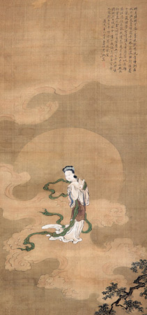
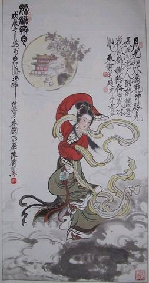
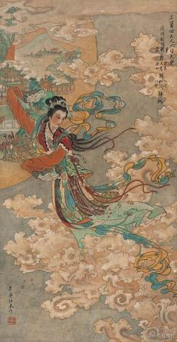
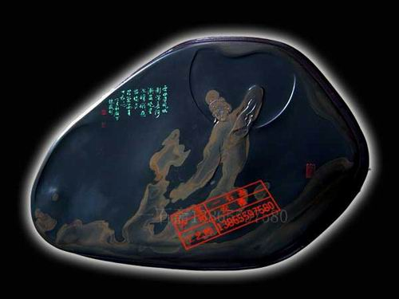
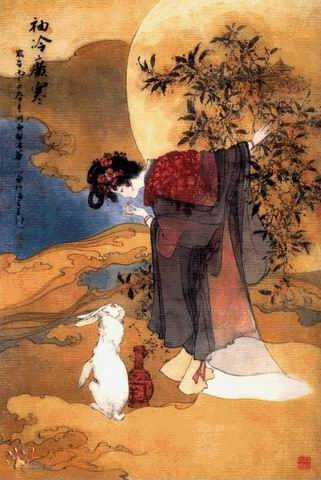

嫦娥奔月是我国著名的神话传说，也是我国十大远古爱情故事之一，在多部文献典籍中均有记述。
对于故事的主人公“嫦娥”，历史典籍亦多论述。“嫦娥”，亦作“姮娥”，即《山海经•大荒西经》所记“生月十二”之常羲。姮娥古音读羲为娥，逐渐演变为奔月之常娥。《文选》注两引《归藏》，均谓常娥服不死药奔月。知常娥神话古有流传，非始于《准南子》。又《准南鸿烈集解》引庄达吉云：“姮娥，诸本皆作恒，唯《意林》作姮，《文选》注引此作常，准南王当讳恒，不应作恒，疑《意林》是也”。汉文帝名恒故讳之，知姮娥作恒娥，而恒亦即常之意。《集解》又引洪颐煊云：“说文无姮字，后人所造。”
目前较为完整的文献记载见于《淮南子•外八篇》中的“妲娥飞天”一节： “昔者，羿狩猎山中，遇妲娥于月桂树下。遂以月桂为证，成天作之合。 逮至尧之时，十日并出。焦禾稼，杀草木，而民无所食。猰貐、凿齿、九婴、大风、封豖希、修蛇皆为民害。尧乃使羿诛凿齿于畴华之野，杀九婴于凶水之上，缴大风于青邱之泽，上射十日而下杀猰貐，断修蛇于洞庭，擒封豖希于桑林。万民皆喜，置尧以为天子。 羿请不死之药于西王母，托与妲娥。逢蒙往而窃之，窃之不成，欲加害妲娥。娥无以为计，吞不死药以升天。然不忍离羿而去，滞留月宫。广寒寂寥，怅然有丧，无以继之，遂催吴刚伐桂，玉兔捣药，欲配飞升之药，重回人间焉。 羿闻娥奔月而去，痛不欲生。月母感念其诚，允娥于月圆之日与羿会于月桂之下。民间有闻其窃窃私语者众焉。
“很久以前，大羿到山中狩猎的时候，在一棵月桂树下遇到嫦娥，二人便以月桂树为媒，结为夫妻。 到了帝尧的时代，天上出现了十个太阳，烧焦了庄稼，烤死了草木，人民没有了食物。同时猰貐、凿齿、九婴、大风、封豖希、修蛇等妖魔鬼怪也开始危害百姓。于是帝尧命令大羿将凿齿处死在畴华之野，将九婴诛杀于凶水之上，将大风战败于青邱之泽，射掉天上多余的太阳，杀死猰貐，将修蛇斩于洞庭，在桑林逮住封豖希。万民欢喜，拥戴尧为天子。 后来，大羿从西王母那里得到了不死药，交给嫦娥保管。逢蒙听说后前去偷窃，偷窃不成就要加害嫦娥。情急之下，嫦娥吞下不死药飞到了天上。由于不忍心离开大羿，嫦娥滞留在月亮广寒宫。广寒宫里寂寥难耐，于是就催促吴刚砍伐桂树，让玉兔捣药，想配成飞升之药，好早日回到人间与大羿团聚。 大羿听说娥奔月之后，痛不欲生。月母为二人的真诚所感动，于是允许嫦娥每年在月圆之日下界与大羿在月桂树下相会。据说民间有好多人都曾经听到大羿与嫦娥在月桂树下窃窃私语呢。” 民间中秋节做月饼供嫦娥的风俗由此形成，也是世人渴望美好团圆，渴望幸福生活的情感流泄。
史书上的“嫦娥奔月”亦有不同版本，大体谓嫦娥偷食仙药而奔月。 据《准南子•览冥训》载：“羿请不死之药于西王母，姮娥窃以奔月，怅然有丧，无以续之”。高诱注：“姮娥，羿妻。羿请不死药于西王母，未及服食之，姮娥盗食之，得仙，奔入月中为月精也。”《初学记》卷一引古本《准南子》，于“姮娥窃以奔月”句下，尚有“托身于月、是为蟾蜍、而为月精”十二字，今本并脱去。意思是嫦娥经受不住天上生活的诱惑，偷吃了丈夫从西王母那儿讨来的不死之药后，飞到月宫。但琼楼玉宇，高处不胜寒。她在漫漫长夜中咀嚼孤独、悔恨的滋味，慢慢地变成了月精白蛤蟆，在月宫中终日被罚捣不死药，过着寂寞清苦的生活。李商隐曾有诗感叹嫦娥：“嫦娥应悔偷灵药，碧海青天夜夜心。” 《全上古文》辑《灵宪》则记载了“嫦娥化蟾”的故事：“嫦娥，羿妻也，窃王母不死药服之，奔月。将往，枚占于有黄。有黄占之：曰：‘吉，翩翩归妹，独将西行，逢天晦芒，毋惊毋恐，后且大昌。’嫦娥遂托身于月，是为蟾蜍。”
